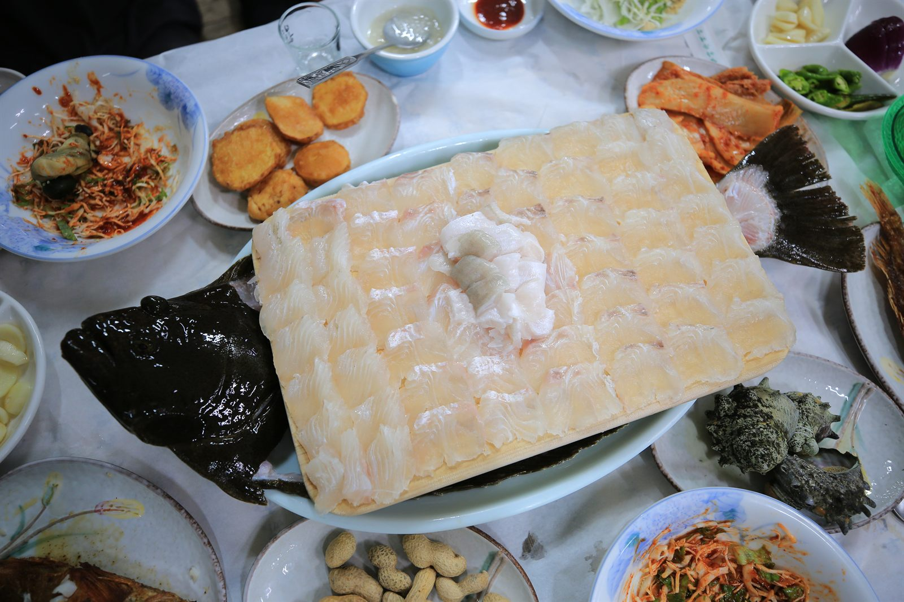
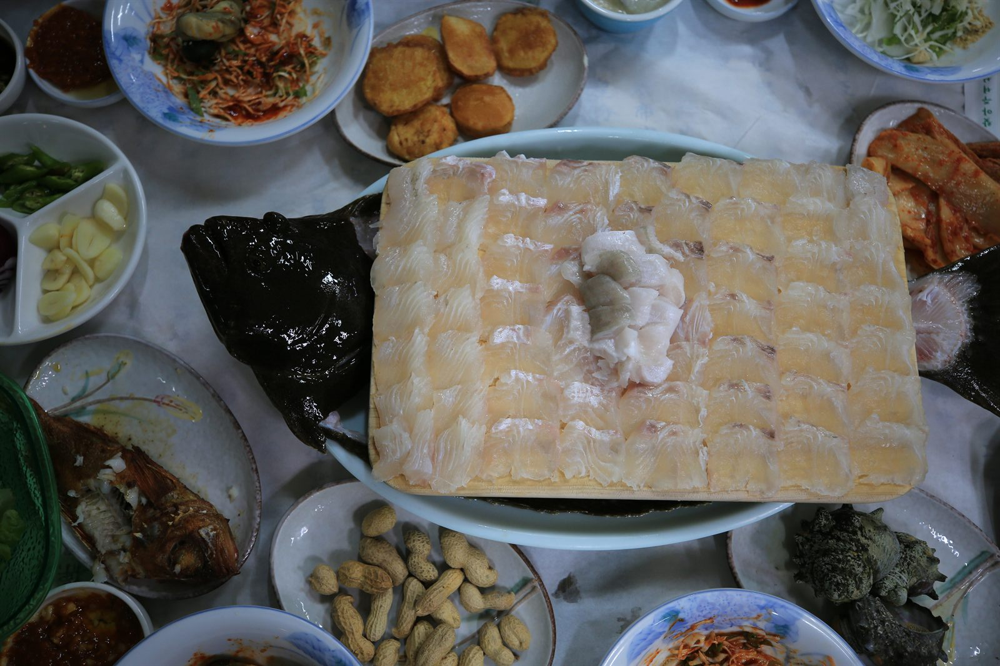
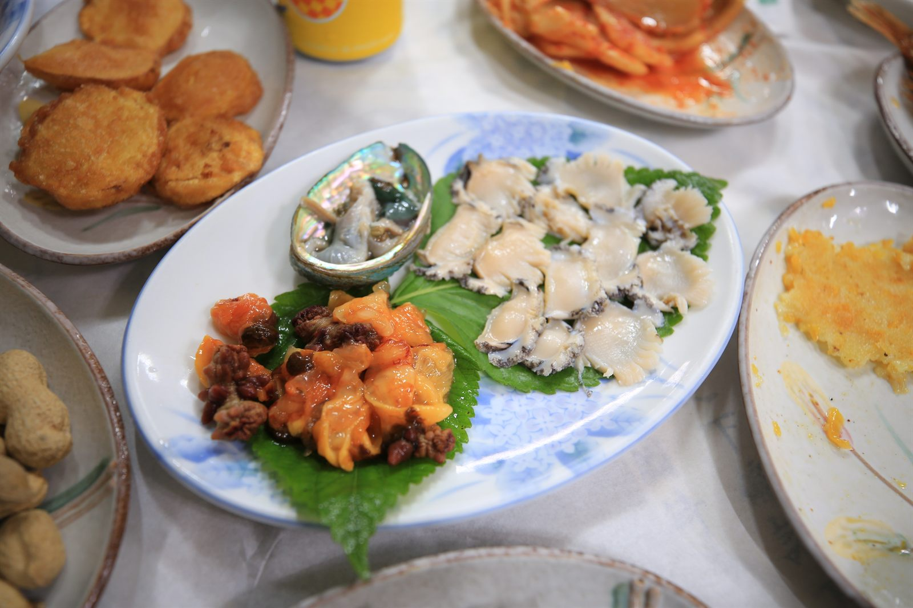
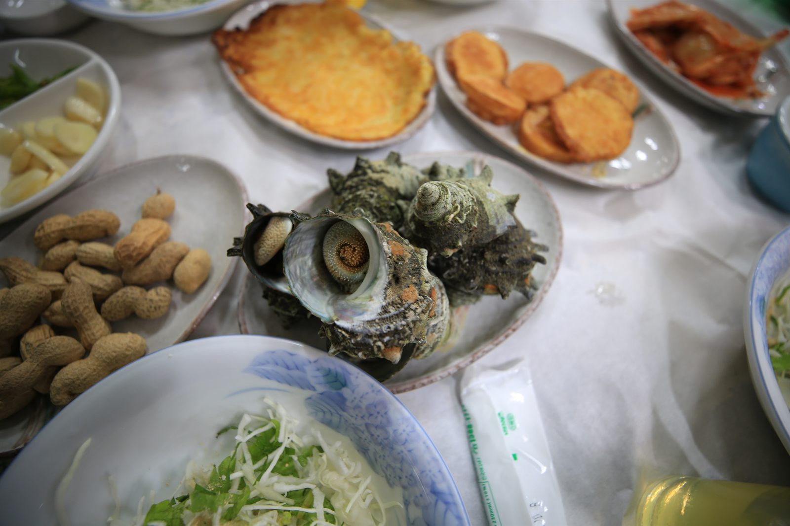
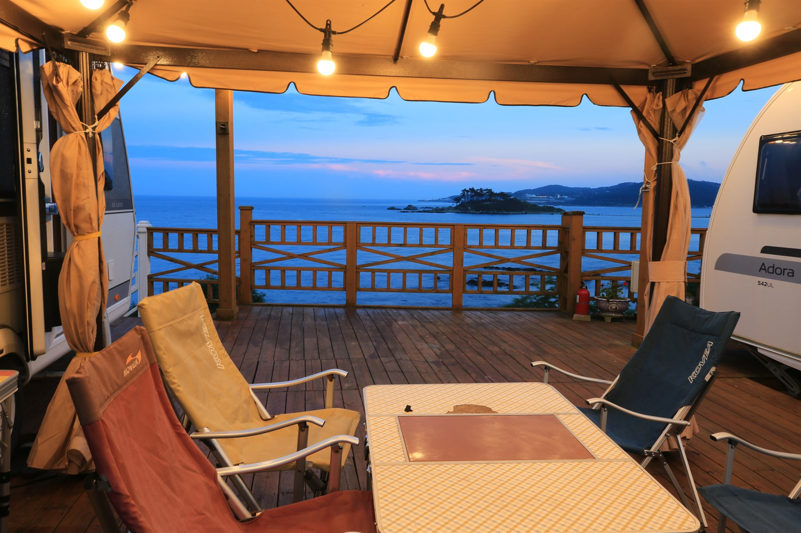

OCEAN VIEW CARAVAN & PENSION
강양항 푸른 바다가 눈앞에 펼쳐지는 곳
카라반·펜션에서 즐기는 하룻밤, 직접 운영하는 동해횟집의 신선한 회까지
ABOUT
동해카라반펜션은 울산 울주군 강양항 바로 앞, 바다가 한눈에 내려다보이는 언덕에 자리하고 있습니다.
유럽형 카라반 3대와 펜션 객실 3실, 그리고 바비큐를 즐길 수 있는 데크존까지 —
파도 소리를 들으며 잊지 못할 추억을 만들어 보세요.
모든 공간에서 바다가 보이는 탁 트인 전망
아도라 · 하비 · 퍼슈트, 감성 캠핑의 정석
가족 · 단체 모임에 좋은 넓은 객실
바다를 보며 즐기는 캠핑 데크
동해카라반펜션은 강양항 앞 동해횟집을 함께 운영합니다.
멀리 찾아다닐 필요 없이, 숙소 바로 옆에서 그날 들어온 신선한 회를 바다와 함께 즐기세요.





사진을 누르면 크게 볼 수 있습니다
항구가 코앞이라 그날그날 들어온 활어를 바로 손질해 드립니다. 싱싱함이 다릅니다.
창밖으로 강양항과 명선교가 펼쳐지는 자리. 노을 지는 바다를 보며 먹는 회 한 점이 여행의 하이라이트입니다.
차를 타고 나갈 필요 없이 저녁은 회, 밤에는 바비큐와 명선교 야경까지. 술 한잔하셔도 걱정 없습니다.
🐟 회 포장, 단체 식사, 숙박 연계는 010-4589-1415로 문의해 주세요.
ROOMS
GALLERY
INFORMATION
입실 15:00 / 퇴실 11:00
(데크존 등 자세한 시간은 예약 시 안내)
웨버57 (6~8인용) 30,000원
웨버47 (2~4인용) 20,000원
공통 지급품목 : 숯(초기 점화 후 지급) · 여유숯 · 일회용 전용석쇠 · 장갑
추억의 월광보합 오락기 무료 이용!
아이부터 어른까지 모두 즐겨 보세요.
여름 시즌 야외 간이 수영장 운영
(운영 기간은 사전 문의)
펜션 내 무료 주차장 완비
카라반 및 객실 내부는 금연입니다.
지정된 장소를 이용해 주세요.
010-4589-1415
실시간 예약은 상단 예약 버튼을 이용해 주세요.
TRAVEL
동해카라반펜션은 강양항 바로 앞에 있어 명선교와 진하해수욕장은 걸어서,
간절곶 · 장생포 고래마을 · 태화강 국가정원 · 오시리아까지는 차로 가볍게 다녀올 수 있습니다.
펜션 바로 앞 · 울주군 대표 야경 명소
강양항과 진하해수욕장을 잇는 높이 17.5m의 인도교. 엘리베이터로 올라가면 진하 앞바다와 명선도가 한눈에 들어옵니다. 밤이 되면 명선도 전체가 고래 미디어아트로 물들어 환상적인 야경을 만듭니다.
명선교 건너 바로 · 울산 최장 백사장
경사가 완만하고 모래가 고와 아이들과 놀기 좋은 울산 대표 해수욕장. 여름 해수욕은 물론 서핑 · 요트 같은 해양레저로도 유명하고, 물때가 맞으면 명선도까지 바닷길이 열립니다.
동해안 제일의 벚꽃 명소 · 입장료 무료
임진왜란 때 쌓은 성벽 길이 2.5km의 거대한 석성(울산시 문화재자료 제8호). 성곽을 따라 오르면 회야강과 바다가 시원하게 펼쳐지고, 봄이면 성 전체가 벚꽃으로 뒤덮입니다.
한반도에서 해가 가장 먼저 뜨는 곳
호미곶보다 1분, 정동진보다 5분 먼저 해가 뜨는 일출 명소. 새하얀 간절곶등대와 높이 5m의 소망우체통이 대표 포토존이고, 잔디광장과 해안 산책로가 잘 가꾸어져 있습니다.
국내 최대 옹기 집산지 · 아이 체험 추천
장인들이 지금도 옹기를 굽는 마을. 울산옹기박물관 관람은 무료이고, 옹기아카데미관에서 흙을 직접 빚어 보는 체험(약 40분, 매시 정각 시작)도 할 수 있어 비 오는 날 일정으로 좋습니다.
해발 742m · 낙동정맥 최고봉
원효대사의 마지막 수도지로 알려진 산. 능선 양쪽으로 진달래와 억새 군락이 이어지고, 여름에는 내원암계곡 물놀이, 가을에는 단풍 산행지로 인기입니다.
더골프클럽 · 오르비스 골프클럽
펜션에서 차로 약 10분 거리에 골프장 두 곳이 있어 라운딩 전후 숙소로 이용하기 좋습니다. 넓은 객실과 무료 주차장을 갖추고 있어 골프 여행 숙소로 편안합니다.
대한민국 제2호 국가정원 · 은하수길
태화강을 따라 십리(약 4km) 이어지는 50만 그루의 대나무 숲. 낮에는 시원한 대숲 산책길이, 밤에는 은하수처럼 빛나는 조명길 '은하수길'이 펼쳐집니다.
부산 기장 · 하루 코스로 딱
롯데월드 어드벤처 부산, 아쿠아리움, 스카이라인 루지, 프리미엄 아울렛, 해동용궁사까지 모여 있는 종합 관광단지. 아이들과 하루 종일 놀기 좋습니다.
펜션에서 차로 단 10분. 성벽 길이 2.5km의 서생포왜성은 동해안 최고의 벚꽃 풍광으로 손꼽혀
해마다 벚꽃철이면 부산 · 경남에서도 일부러 찾아오는 곳입니다.
🌸 봄 1박 2일 추천 코스 — 오전 서생포왜성 벚꽃 → 점심 동해횟집 회 → 오후 진하해수욕장 산책 → 저녁 명선교 · 명선도 야경 → 펜션 바비큐
펜션에서 차로 약 10분 거리에 골프장 두 곳이 있습니다.
이른 티오프 전날 묵고 라운딩 후 바다를 보며 바비큐까지 — 골프 여행 베이스캠프로 좋습니다.
울산 울주군 서생면 용연길 206-52 · 052-240-0100
⛳ 이른 체크아웃 등 라운딩 일정에 맞춘 조율은 010-4589-1415로 문의해 주세요.
※ 소요 시간은 펜션 기준 대략적인 승용차 이동 시간입니다. 운영시간 · 요금은 변동될 수 있으니 방문 전 확인해 주세요.
LOCATION